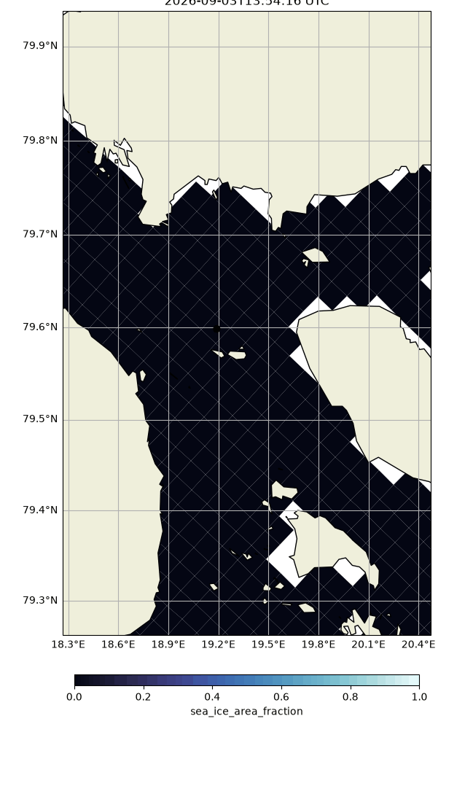
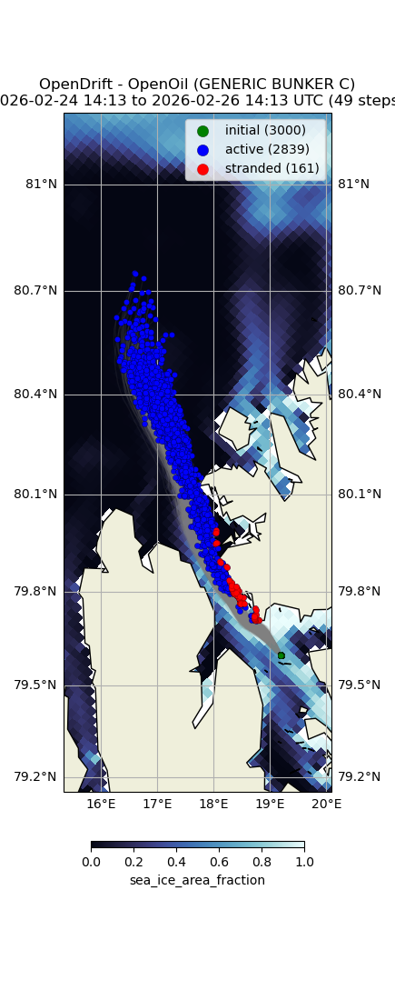

Note
Go to the end to download the full example code.
Oil in ice
from datetime import datetime, timedelta
from opendrift.readers import reader_netCDF_CF_generic
from opendrift.models.openoil import OpenOil
import cmocean
o = OpenOil(loglevel=20)
14:13:58 INFO opendrift:576: OpenDriftSimulation initialised (version 1.14.8 / v1.14.8-22-ged2e201)
Using live data from Barents 2.5 km ocean model
o.add_readers_from_list(['https://thredds.met.no/thredds/dodsC/fou-hi/barents_eps_zdepth_be'])
Adjusting some configuration
o.set_config('processes:dispersion', False)
o.set_config('processes:evaporation', False)
o.set_config('processes:emulsification', False)
o.set_config('environment:constant:horizontal_diffusivity', 10)
o.set_config('drift:truncate_ocean_model_below_m', 3)
Imaginary oil spill in Hinlopen strait
o.seed_elements(lon=19.1909, lat=79.5986, radius=50,
number=3000, time=datetime.now() - timedelta(days=7))
14:13:58 INFO opendrift.models.openoil.openoil:1711: Oil type not specified, using default: GENERIC BUNKER C
14:13:58 INFO opendrift.models.openoil.adios.dirjs:86: Querying ADIOS database for oil: GENERIC BUNKER C
14:13:58 INFO opendrift.models.openoil.openoil:1720: Using density 988.1 and viscosity 0.02169233387797564 of oiltype GENERIC BUNKER C
14:13:58 INFO opendrift.models.basemodel.environment:203: Adding a global landmask from GSHHG
14:14:02 INFO opendrift.models.basemodel.environment:227: Fallback values will be used for the following variables which have no readers:
14:14:02 INFO opendrift.models.basemodel.environment:230: sea_surface_height: 0.000000
14:14:02 INFO opendrift.models.basemodel.environment:230: upward_sea_water_velocity: 0.000000
14:14:02 INFO opendrift.models.basemodel.environment:230: sea_surface_wave_significant_height: 0.000000
14:14:02 INFO opendrift.models.basemodel.environment:230: sea_surface_wave_stokes_drift_x_velocity: 0.000000
14:14:02 INFO opendrift.models.basemodel.environment:230: sea_surface_wave_stokes_drift_y_velocity: 0.000000
14:14:02 INFO opendrift.models.basemodel.environment:230: sea_surface_wave_period_at_variance_spectral_density_maximum: 0.000000
14:14:02 INFO opendrift.models.basemodel.environment:230: sea_surface_wave_mean_period_from_variance_spectral_density_second_frequency_moment: 0.000000
14:14:02 INFO opendrift.models.basemodel.environment:230: sea_ice_area_fraction: 0.000000
14:14:02 INFO opendrift.models.basemodel.environment:230: sea_ice_x_velocity: 0.000000
14:14:02 INFO opendrift.models.basemodel.environment:230: sea_ice_y_velocity: 0.000000
14:14:02 INFO opendrift.models.basemodel.environment:230: sea_water_temperature: 10.000000
14:14:02 INFO opendrift.models.basemodel.environment:230: sea_water_salinity: 34.000000
14:14:02 INFO opendrift.models.basemodel.environment:230: sea_floor_depth_below_sea_level: 10000.000000
14:14:02 INFO opendrift.models.basemodel.environment:230: ocean_vertical_diffusivity: 0.020000
14:14:02 INFO opendrift.models.basemodel.environment:230: ocean_mixed_layer_thickness: 50.000000
Running model
o.run(duration=timedelta(hours=48), time_step=1800, time_step_output=3600)
14:14:02 INFO opendrift:1836: Skipping environment variable upward_sea_water_velocity because of condition ['drift:vertical_advection', 'is', False]
14:14:02 INFO opendrift:1847: Storing previous values of element property lon because of condition (('general:coastline_action', 'in', ['stranding', 'previous']), 'or', ('general:seafloor_action', 'in', ['previous']))
14:14:02 INFO opendrift:1847: Storing previous values of element property lat because of condition (('general:coastline_action', 'in', ['stranding', 'previous']), 'or', ('general:seafloor_action', 'in', ['previous']))
14:14:02 INFO opendrift:955: Using existing reader for land_binary_mask to move elements to ocean
14:14:02 INFO opendrift:986: All points are in ocean
14:14:02 INFO opendrift.models.openoil.openoil:695: Oil-water surface tension is 0.035935 Nm
14:14:02 INFO opendrift.models.openoil.openoil:708: Max water fraction not available for GENERIC BUNKER C, using default
14:14:02 INFO opendrift:2144: 2026-02-24 14:13:58.878623 - step 1 of 96 - 3000 active elements (0 deactivated)
14:14:02 INFO opendrift.readers:63: Opening file with xr.open_dataset
14:14:05 INFO opendrift.readers.reader_netCDF_CF_generic:332: Detected dimensions: {'x': 'X', 'y': 'Y', 'z': 'depth', 'time': 'time'}
14:14:05 INFO opendrift.readers.basereader:178: Variable x_sea_water_velocity will be rotated from eastward_sea_water_velocity
14:14:05 INFO opendrift.readers.basereader:178: Variable y_sea_water_velocity will be rotated from northward_sea_water_velocity
14:14:07 WARNING opendrift.readers.basereader.variables:656: Invalid values (-0.032469656 to -0.00402196) found for ocean_vertical_diffusivity, replacing with NaN
14:14:07 WARNING opendrift.readers.basereader.variables:659: (allowed range: [0, 1])
14:14:09 WARNING opendrift.readers.basereader.variables:656: Invalid values (-0.038628306 to -0.0043882774) found for ocean_vertical_diffusivity, replacing with NaN
14:14:09 WARNING opendrift.readers.basereader.variables:659: (allowed range: [0, 1])
14:14:09 WARNING opendrift.readers.interpolation.interpolators:118: Only NaNs input to linearNDFast - returning
14:14:09 WARNING opendrift.readers.interpolation.interpolators:118: Only NaNs input to linearNDFast - returning
14:14:09 INFO opendrift.models.openoil.openoil:1192: Ice concentration above 30%, using Nordam scheme for advection in ice
14:14:09 INFO opendrift:2144: 2026-02-24 14:43:58.878623 - step 2 of 96 - 3000 active elements (0 deactivated)
14:14:09 WARNING opendrift.readers.interpolation.interpolators:118: Only NaNs input to linearNDFast - returning
14:14:09 WARNING opendrift.readers.interpolation.interpolators:118: Only NaNs input to linearNDFast - returning
14:14:09 INFO opendrift.models.openoil.openoil:1192: Ice concentration above 30%, using Nordam scheme for advection in ice
14:14:09 INFO opendrift:2144: 2026-02-24 15:13:58.878623 - step 3 of 96 - 3000 active elements (0 deactivated)
14:14:11 WARNING opendrift.readers.basereader.variables:656: Invalid values (-0.04100125 to -0.0036008335) found for ocean_vertical_diffusivity, replacing with NaN
14:14:11 WARNING opendrift.readers.basereader.variables:659: (allowed range: [0, 1])
14:14:11 WARNING opendrift.readers.interpolation.interpolators:118: Only NaNs input to linearNDFast - returning
14:14:11 WARNING opendrift.readers.interpolation.interpolators:118: Only NaNs input to linearNDFast - returning
14:14:11 INFO opendrift.models.openoil.openoil:1192: Ice concentration above 30%, using Nordam scheme for advection in ice
14:14:11 INFO opendrift:2144: 2026-02-24 15:43:58.878623 - step 4 of 96 - 3000 active elements (0 deactivated)
14:14:11 WARNING opendrift.readers.interpolation.interpolators:118: Only NaNs input to linearNDFast - returning
14:14:11 WARNING opendrift.readers.interpolation.interpolators:118: Only NaNs input to linearNDFast - returning
14:14:12 INFO opendrift.models.openoil.openoil:1192: Ice concentration above 30%, using Nordam scheme for advection in ice
14:14:12 INFO opendrift:2144: 2026-02-24 16:13:58.878623 - step 5 of 96 - 3000 active elements (0 deactivated)
14:14:14 WARNING opendrift.readers.basereader.variables:656: Invalid values (-0.03656001 to -0.0042967806) found for ocean_vertical_diffusivity, replacing with NaN
14:14:14 WARNING opendrift.readers.basereader.variables:659: (allowed range: [0, 1])
14:14:14 WARNING opendrift.readers.interpolation.interpolators:118: Only NaNs input to linearNDFast - returning
14:14:14 WARNING opendrift.readers.interpolation.interpolators:118: Only NaNs input to linearNDFast - returning
14:14:14 INFO opendrift.models.openoil.openoil:1192: Ice concentration above 30%, using Nordam scheme for advection in ice
14:14:14 INFO opendrift:2144: 2026-02-24 16:43:58.878623 - step 6 of 96 - 3000 active elements (0 deactivated)
14:14:14 WARNING opendrift.readers.interpolation.interpolators:118: Only NaNs input to linearNDFast - returning
14:14:14 WARNING opendrift.readers.interpolation.interpolators:118: Only NaNs input to linearNDFast - returning
14:14:14 INFO opendrift.models.openoil.openoil:1192: Ice concentration above 30%, using Nordam scheme for advection in ice
14:14:14 INFO opendrift:2144: 2026-02-24 17:13:58.878623 - step 7 of 96 - 3000 active elements (0 deactivated)
14:14:16 WARNING opendrift.readers.basereader.variables:656: Invalid values (-0.024336223 to -0.0023371133) found for ocean_vertical_diffusivity, replacing with NaN
14:14:16 WARNING opendrift.readers.basereader.variables:659: (allowed range: [0, 1])
14:14:16 WARNING opendrift.readers.interpolation.interpolators:118: Only NaNs input to linearNDFast - returning
14:14:16 WARNING opendrift.readers.interpolation.interpolators:118: Only NaNs input to linearNDFast - returning
14:14:16 INFO opendrift.models.openoil.openoil:1192: Ice concentration above 30%, using Nordam scheme for advection in ice
14:14:16 INFO opendrift:2144: 2026-02-24 17:43:58.878623 - step 8 of 96 - 3000 active elements (0 deactivated)
14:14:16 WARNING opendrift.readers.interpolation.interpolators:118: Only NaNs input to linearNDFast - returning
14:14:16 WARNING opendrift.readers.interpolation.interpolators:118: Only NaNs input to linearNDFast - returning
14:14:16 INFO opendrift.models.openoil.openoil:1192: Ice concentration above 30%, using Nordam scheme for advection in ice
14:14:16 INFO opendrift:2144: 2026-02-24 18:13:58.878623 - step 9 of 96 - 3000 active elements (0 deactivated)
14:14:19 WARNING opendrift.readers.basereader.variables:656: Invalid values (-0.018492531 to -0.0017434248) found for ocean_vertical_diffusivity, replacing with NaN
14:14:19 WARNING opendrift.readers.basereader.variables:659: (allowed range: [0, 1])
14:14:19 WARNING opendrift.readers.interpolation.interpolators:118: Only NaNs input to linearNDFast - returning
14:14:19 WARNING opendrift.readers.interpolation.interpolators:118: Only NaNs input to linearNDFast - returning
14:14:19 INFO opendrift.models.openoil.openoil:1192: Ice concentration above 30%, using Nordam scheme for advection in ice
14:14:19 INFO opendrift:2144: 2026-02-24 18:43:58.878623 - step 10 of 96 - 3000 active elements (0 deactivated)
14:14:19 WARNING opendrift.readers.interpolation.interpolators:118: Only NaNs input to linearNDFast - returning
14:14:19 WARNING opendrift.readers.interpolation.interpolators:118: Only NaNs input to linearNDFast - returning
14:14:19 INFO opendrift.models.openoil.openoil:1192: Ice concentration above 30%, using Nordam scheme for advection in ice
14:14:19 INFO opendrift:2144: 2026-02-24 19:13:58.878623 - step 11 of 96 - 3000 active elements (0 deactivated)
14:14:21 WARNING opendrift.readers.basereader.variables:656: Invalid values (-0.017254775 to -0.001516346) found for ocean_vertical_diffusivity, replacing with NaN
14:14:21 WARNING opendrift.readers.basereader.variables:659: (allowed range: [0, 1])
14:14:21 WARNING opendrift.readers.interpolation.interpolators:118: Only NaNs input to linearNDFast - returning
14:14:21 WARNING opendrift.readers.interpolation.interpolators:118: Only NaNs input to linearNDFast - returning
14:14:21 INFO opendrift.models.openoil.openoil:1192: Ice concentration above 30%, using Nordam scheme for advection in ice
14:14:21 INFO opendrift:2144: 2026-02-24 19:43:58.878623 - step 12 of 96 - 3000 active elements (0 deactivated)
14:14:21 WARNING opendrift.readers.interpolation.interpolators:118: Only NaNs input to linearNDFast - returning
14:14:21 WARNING opendrift.readers.interpolation.interpolators:118: Only NaNs input to linearNDFast - returning
14:14:21 INFO opendrift.models.openoil.openoil:1192: Ice concentration above 30%, using Nordam scheme for advection in ice
14:14:21 INFO opendrift:2144: 2026-02-24 20:13:58.878623 - step 13 of 96 - 3000 active elements (0 deactivated)
14:14:23 WARNING opendrift.readers.basereader.variables:656: Invalid values (-0.018282732 to -0.0013903923) found for ocean_vertical_diffusivity, replacing with NaN
14:14:23 WARNING opendrift.readers.basereader.variables:659: (allowed range: [0, 1])
14:14:23 WARNING opendrift.readers.interpolation.interpolators:118: Only NaNs input to linearNDFast - returning
14:14:23 WARNING opendrift.readers.interpolation.interpolators:118: Only NaNs input to linearNDFast - returning
14:14:24 INFO opendrift.models.openoil.openoil:1192: Ice concentration above 30%, using Nordam scheme for advection in ice
14:14:24 INFO opendrift:2144: 2026-02-24 20:43:58.878623 - step 14 of 96 - 3000 active elements (0 deactivated)
14:14:24 WARNING opendrift.readers.interpolation.interpolators:118: Only NaNs input to linearNDFast - returning
14:14:24 WARNING opendrift.readers.interpolation.interpolators:118: Only NaNs input to linearNDFast - returning
14:14:24 INFO opendrift.models.openoil.openoil:1192: Ice concentration above 30%, using Nordam scheme for advection in ice
14:14:24 INFO opendrift:2144: 2026-02-24 21:13:58.878623 - step 15 of 96 - 3000 active elements (0 deactivated)
14:14:26 WARNING opendrift.readers.basereader.variables:656: Invalid values (-0.021693297 to -0.0013112973) found for ocean_vertical_diffusivity, replacing with NaN
14:14:26 WARNING opendrift.readers.basereader.variables:659: (allowed range: [0, 1])
14:14:26 WARNING opendrift.readers.interpolation.interpolators:118: Only NaNs input to linearNDFast - returning
14:14:26 WARNING opendrift.readers.interpolation.interpolators:118: Only NaNs input to linearNDFast - returning
14:14:26 INFO opendrift.models.openoil.openoil:1192: Ice concentration above 30%, using Nordam scheme for advection in ice
14:14:26 INFO opendrift:2144: 2026-02-24 21:43:58.878623 - step 16 of 96 - 3000 active elements (0 deactivated)
14:14:26 WARNING opendrift.readers.interpolation.interpolators:118: Only NaNs input to linearNDFast - returning
14:14:26 WARNING opendrift.readers.interpolation.interpolators:118: Only NaNs input to linearNDFast - returning
14:14:26 INFO opendrift.models.openoil.openoil:1192: Ice concentration above 30%, using Nordam scheme for advection in ice
14:14:26 INFO opendrift:2144: 2026-02-24 22:13:58.878623 - step 17 of 96 - 3000 active elements (0 deactivated)
14:14:28 WARNING opendrift.readers.basereader.variables:656: Invalid values (-0.02557623 to -0.0015334914) found for ocean_vertical_diffusivity, replacing with NaN
14:14:28 WARNING opendrift.readers.basereader.variables:659: (allowed range: [0, 1])
14:14:28 WARNING opendrift.readers.interpolation.interpolators:118: Only NaNs input to linearNDFast - returning
14:14:28 WARNING opendrift.readers.interpolation.interpolators:118: Only NaNs input to linearNDFast - returning
14:14:28 INFO opendrift.models.openoil.openoil:1192: Ice concentration above 30%, using Nordam scheme for advection in ice
14:14:28 INFO opendrift:2144: 2026-02-24 22:43:58.878623 - step 18 of 96 - 3000 active elements (0 deactivated)
14:14:28 WARNING opendrift.readers.interpolation.interpolators:118: Only NaNs input to linearNDFast - returning
14:14:28 WARNING opendrift.readers.interpolation.interpolators:118: Only NaNs input to linearNDFast - returning
14:14:29 INFO opendrift.models.openoil.openoil:1192: Ice concentration above 30%, using Nordam scheme for advection in ice
14:14:29 INFO opendrift:2144: 2026-02-24 23:13:58.878623 - step 19 of 96 - 3000 active elements (0 deactivated)
14:14:31 WARNING opendrift.readers.basereader.variables:656: Invalid values (-0.027519016 to -0.0029348177) found for ocean_vertical_diffusivity, replacing with NaN
14:14:31 WARNING opendrift.readers.basereader.variables:659: (allowed range: [0, 1])
14:14:31 WARNING opendrift.readers.interpolation.interpolators:118: Only NaNs input to linearNDFast - returning
14:14:31 WARNING opendrift.readers.interpolation.interpolators:118: Only NaNs input to linearNDFast - returning
14:14:31 INFO opendrift.models.openoil.openoil:1192: Ice concentration above 30%, using Nordam scheme for advection in ice
14:14:31 INFO opendrift:2144: 2026-02-24 23:43:58.878623 - step 20 of 96 - 3000 active elements (0 deactivated)
14:14:31 WARNING opendrift.readers.interpolation.interpolators:118: Only NaNs input to linearNDFast - returning
14:14:31 WARNING opendrift.readers.interpolation.interpolators:118: Only NaNs input to linearNDFast - returning
14:14:31 INFO opendrift.models.openoil.openoil:1192: Ice concentration above 30%, using Nordam scheme for advection in ice
14:14:31 INFO opendrift:2144: 2026-02-25 00:13:58.878623 - step 21 of 96 - 3000 active elements (0 deactivated)
14:14:33 WARNING opendrift.readers.basereader.variables:656: Invalid values (-0.037696164 to -0.0041932217) found for ocean_vertical_diffusivity, replacing with NaN
14:14:33 WARNING opendrift.readers.basereader.variables:659: (allowed range: [0, 1])
14:14:33 WARNING opendrift.readers.interpolation.interpolators:118: Only NaNs input to linearNDFast - returning
14:14:33 WARNING opendrift.readers.interpolation.interpolators:118: Only NaNs input to linearNDFast - returning
14:14:33 INFO opendrift.models.openoil.openoil:1192: Ice concentration above 30%, using Nordam scheme for advection in ice
14:14:33 INFO opendrift:2144: 2026-02-25 00:43:58.878623 - step 22 of 96 - 3000 active elements (0 deactivated)
14:14:35 WARNING opendrift.readers.interpolation.interpolators:118: Only NaNs input to linearNDFast - returning
14:14:35 WARNING opendrift.readers.interpolation.interpolators:118: Only NaNs input to linearNDFast - returning
14:14:35 INFO opendrift.models.openoil.openoil:1192: Ice concentration above 30%, using Nordam scheme for advection in ice
14:14:35 INFO opendrift:2144: 2026-02-25 01:13:58.878623 - step 23 of 96 - 3000 active elements (0 deactivated)
14:14:37 WARNING opendrift.readers.basereader.variables:656: Invalid values (-0.04683302 to -0.008516366) found for ocean_vertical_diffusivity, replacing with NaN
14:14:37 WARNING opendrift.readers.basereader.variables:659: (allowed range: [0, 1])
14:14:37 WARNING opendrift.readers.interpolation.interpolators:118: Only NaNs input to linearNDFast - returning
14:14:37 WARNING opendrift.readers.interpolation.interpolators:118: Only NaNs input to linearNDFast - returning
14:14:37 INFO opendrift.models.openoil.openoil:1192: Ice concentration above 30%, using Nordam scheme for advection in ice
14:14:37 INFO opendrift:2144: 2026-02-25 01:43:58.878623 - step 24 of 96 - 3000 active elements (0 deactivated)
14:14:37 WARNING opendrift.readers.interpolation.interpolators:118: Only NaNs input to linearNDFast - returning
14:14:37 WARNING opendrift.readers.interpolation.interpolators:118: Only NaNs input to linearNDFast - returning
14:14:37 INFO opendrift.models.openoil.openoil:1192: Ice concentration above 30%, using Nordam scheme for advection in ice
14:14:37 INFO opendrift:2144: 2026-02-25 02:13:58.878623 - step 25 of 96 - 3000 active elements (0 deactivated)
14:14:39 WARNING opendrift.readers.basereader.variables:656: Invalid values (-0.05344021 to -0.009840993) found for ocean_vertical_diffusivity, replacing with NaN
14:14:39 WARNING opendrift.readers.basereader.variables:659: (allowed range: [0, 1])
14:14:39 WARNING opendrift.readers.interpolation.interpolators:118: Only NaNs input to linearNDFast - returning
14:14:39 WARNING opendrift.readers.interpolation.interpolators:118: Only NaNs input to linearNDFast - returning
14:14:41 INFO opendrift.models.openoil.openoil:1192: Ice concentration above 30%, using Nordam scheme for advection in ice
14:14:41 INFO opendrift:2144: 2026-02-25 02:43:58.878623 - step 26 of 96 - 2999 active elements (1 deactivated)
14:14:41 WARNING opendrift.readers.interpolation.interpolators:118: Only NaNs input to linearNDFast - returning
14:14:41 WARNING opendrift.readers.interpolation.interpolators:118: Only NaNs input to linearNDFast - returning
14:14:41 INFO opendrift.models.openoil.openoil:1192: Ice concentration above 30%, using Nordam scheme for advection in ice
14:14:41 INFO opendrift:2144: 2026-02-25 03:13:58.878623 - step 27 of 96 - 2998 active elements (2 deactivated)
14:14:43 WARNING opendrift.readers.basereader.variables:656: Invalid values (-0.054983296 to -0.0074394816) found for ocean_vertical_diffusivity, replacing with NaN
14:14:43 WARNING opendrift.readers.basereader.variables:659: (allowed range: [0, 1])
14:14:43 WARNING opendrift.readers.interpolation.interpolators:118: Only NaNs input to linearNDFast - returning
14:14:43 WARNING opendrift.readers.interpolation.interpolators:118: Only NaNs input to linearNDFast - returning
14:14:44 INFO opendrift.models.openoil.openoil:1192: Ice concentration above 30%, using Nordam scheme for advection in ice
14:14:44 INFO opendrift:2144: 2026-02-25 03:43:58.878623 - step 28 of 96 - 2998 active elements (2 deactivated)
14:14:44 WARNING opendrift.readers.interpolation.interpolators:118: Only NaNs input to linearNDFast - returning
14:14:44 WARNING opendrift.readers.interpolation.interpolators:118: Only NaNs input to linearNDFast - returning
14:14:44 INFO opendrift.models.openoil.openoil:1192: Ice concentration above 30%, using Nordam scheme for advection in ice
14:14:44 INFO opendrift:2144: 2026-02-25 04:13:58.878623 - step 29 of 96 - 2995 active elements (5 deactivated)
14:14:46 WARNING opendrift.readers.basereader.variables:656: Invalid values (-0.04717019 to -0.003980243) found for ocean_vertical_diffusivity, replacing with NaN
14:14:46 WARNING opendrift.readers.basereader.variables:659: (allowed range: [0, 1])
14:14:46 WARNING opendrift.readers.interpolation.interpolators:118: Only NaNs input to linearNDFast - returning
14:14:46 WARNING opendrift.readers.interpolation.interpolators:118: Only NaNs input to linearNDFast - returning
14:14:46 INFO opendrift.models.openoil.openoil:1192: Ice concentration above 30%, using Nordam scheme for advection in ice
14:14:46 INFO opendrift:2144: 2026-02-25 04:43:58.878623 - step 30 of 96 - 2995 active elements (5 deactivated)
14:14:46 WARNING opendrift.readers.interpolation.interpolators:118: Only NaNs input to linearNDFast - returning
14:14:46 WARNING opendrift.readers.interpolation.interpolators:118: Only NaNs input to linearNDFast - returning
14:14:46 INFO opendrift.models.openoil.openoil:1192: Ice concentration above 30%, using Nordam scheme for advection in ice
14:14:46 INFO opendrift:2144: 2026-02-25 05:13:58.878623 - step 31 of 96 - 2994 active elements (6 deactivated)
14:14:49 WARNING opendrift.readers.basereader.variables:656: Invalid values (-0.033009835 to -0.0035238976) found for ocean_vertical_diffusivity, replacing with NaN
14:14:49 WARNING opendrift.readers.basereader.variables:659: (allowed range: [0, 1])
14:14:49 WARNING opendrift.readers.interpolation.interpolators:118: Only NaNs input to linearNDFast - returning
14:14:49 WARNING opendrift.readers.interpolation.interpolators:118: Only NaNs input to linearNDFast - returning
14:14:49 INFO opendrift.models.openoil.openoil:1192: Ice concentration above 30%, using Nordam scheme for advection in ice
14:14:49 INFO opendrift:2144: 2026-02-25 05:43:58.878623 - step 32 of 96 - 2990 active elements (10 deactivated)
14:14:49 WARNING opendrift.readers.interpolation.interpolators:118: Only NaNs input to linearNDFast - returning
14:14:49 WARNING opendrift.readers.interpolation.interpolators:118: Only NaNs input to linearNDFast - returning
14:14:49 INFO opendrift.models.openoil.openoil:1192: Ice concentration above 30%, using Nordam scheme for advection in ice
14:14:49 INFO opendrift:2144: 2026-02-25 06:13:58.878623 - step 33 of 96 - 2989 active elements (11 deactivated)
14:14:51 WARNING opendrift.readers.basereader.variables:656: Invalid values (-0.031902686 to -0.0016983479) found for ocean_vertical_diffusivity, replacing with NaN
14:14:51 WARNING opendrift.readers.basereader.variables:659: (allowed range: [0, 1])
14:14:51 WARNING opendrift.readers.interpolation.interpolators:118: Only NaNs input to linearNDFast - returning
14:14:51 WARNING opendrift.readers.interpolation.interpolators:118: Only NaNs input to linearNDFast - returning
14:14:51 INFO opendrift.models.openoil.openoil:1192: Ice concentration above 30%, using Nordam scheme for advection in ice
14:14:51 INFO opendrift:2144: 2026-02-25 06:43:58.878623 - step 34 of 96 - 2988 active elements (12 deactivated)
14:14:51 WARNING opendrift.readers.interpolation.interpolators:118: Only NaNs input to linearNDFast - returning
14:14:51 WARNING opendrift.readers.interpolation.interpolators:118: Only NaNs input to linearNDFast - returning
14:14:51 INFO opendrift.models.openoil.openoil:1192: Ice concentration above 30%, using Nordam scheme for advection in ice
14:14:51 INFO opendrift:2144: 2026-02-25 07:13:58.878623 - step 35 of 96 - 2985 active elements (15 deactivated)
14:14:54 WARNING opendrift.readers.basereader.variables:656: Invalid values (-0.030727513 to -0.0019350438) found for ocean_vertical_diffusivity, replacing with NaN
14:14:54 WARNING opendrift.readers.basereader.variables:659: (allowed range: [0, 1])
14:14:54 WARNING opendrift.readers.interpolation.interpolators:118: Only NaNs input to linearNDFast - returning
14:14:54 WARNING opendrift.readers.interpolation.interpolators:118: Only NaNs input to linearNDFast - returning
14:14:54 INFO opendrift.models.openoil.openoil:1192: Ice concentration above 30%, using Nordam scheme for advection in ice
14:14:54 INFO opendrift:2144: 2026-02-25 07:43:58.878623 - step 36 of 96 - 2984 active elements (16 deactivated)
14:14:54 WARNING opendrift.readers.interpolation.interpolators:118: Only NaNs input to linearNDFast - returning
14:14:54 WARNING opendrift.readers.interpolation.interpolators:118: Only NaNs input to linearNDFast - returning
14:14:54 INFO opendrift.models.openoil.openoil:1192: Ice concentration above 30%, using Nordam scheme for advection in ice
14:14:54 INFO opendrift:2144: 2026-02-25 08:13:58.878623 - step 37 of 96 - 2983 active elements (17 deactivated)
14:14:56 WARNING opendrift.readers.basereader.variables:656: Invalid values (-0.03188716 to -0.0022034147) found for ocean_vertical_diffusivity, replacing with NaN
14:14:56 WARNING opendrift.readers.basereader.variables:659: (allowed range: [0, 1])
14:14:56 WARNING opendrift.readers.interpolation.interpolators:118: Only NaNs input to linearNDFast - returning
14:14:56 WARNING opendrift.readers.interpolation.interpolators:118: Only NaNs input to linearNDFast - returning
14:14:56 INFO opendrift.models.openoil.openoil:1192: Ice concentration above 30%, using Nordam scheme for advection in ice
14:14:56 INFO opendrift:2144: 2026-02-25 08:43:58.878623 - step 38 of 96 - 2980 active elements (20 deactivated)
14:14:56 WARNING opendrift.readers.interpolation.interpolators:118: Only NaNs input to linearNDFast - returning
14:14:56 WARNING opendrift.readers.interpolation.interpolators:118: Only NaNs input to linearNDFast - returning
14:14:56 INFO opendrift.models.openoil.openoil:1192: Ice concentration above 30%, using Nordam scheme for advection in ice
14:14:56 INFO opendrift:2144: 2026-02-25 09:13:58.878623 - step 39 of 96 - 2979 active elements (21 deactivated)
14:14:59 WARNING opendrift.readers.basereader.variables:656: Invalid values (-0.032906324 to -0.0016707054) found for ocean_vertical_diffusivity, replacing with NaN
14:14:59 WARNING opendrift.readers.basereader.variables:659: (allowed range: [0, 1])
14:14:59 WARNING opendrift.readers.interpolation.interpolators:118: Only NaNs input to linearNDFast - returning
14:14:59 WARNING opendrift.readers.interpolation.interpolators:118: Only NaNs input to linearNDFast - returning
14:14:59 INFO opendrift.models.openoil.openoil:1192: Ice concentration above 30%, using Nordam scheme for advection in ice
14:14:59 INFO opendrift:2144: 2026-02-25 09:43:58.878623 - step 40 of 96 - 2976 active elements (24 deactivated)
14:14:59 WARNING opendrift.readers.interpolation.interpolators:118: Only NaNs input to linearNDFast - returning
14:14:59 WARNING opendrift.readers.interpolation.interpolators:118: Only NaNs input to linearNDFast - returning
14:14:59 INFO opendrift.models.openoil.openoil:1192: Ice concentration above 30%, using Nordam scheme for advection in ice
14:14:59 INFO opendrift:2144: 2026-02-25 10:13:58.878623 - step 41 of 96 - 2976 active elements (24 deactivated)
14:15:01 WARNING opendrift.readers.basereader.variables:656: Invalid values (-0.036182057 to -0.0022751128) found for ocean_vertical_diffusivity, replacing with NaN
14:15:01 WARNING opendrift.readers.basereader.variables:659: (allowed range: [0, 1])
14:15:01 WARNING opendrift.readers.interpolation.interpolators:118: Only NaNs input to linearNDFast - returning
14:15:01 WARNING opendrift.readers.interpolation.interpolators:118: Only NaNs input to linearNDFast - returning
14:15:01 INFO opendrift.models.openoil.openoil:1192: Ice concentration above 30%, using Nordam scheme for advection in ice
14:15:01 INFO opendrift:2144: 2026-02-25 10:43:58.878623 - step 42 of 96 - 2972 active elements (28 deactivated)
14:15:01 WARNING opendrift.readers.interpolation.interpolators:118: Only NaNs input to linearNDFast - returning
14:15:01 WARNING opendrift.readers.interpolation.interpolators:118: Only NaNs input to linearNDFast - returning
14:15:01 INFO opendrift.models.openoil.openoil:1192: Ice concentration above 30%, using Nordam scheme for advection in ice
14:15:01 INFO opendrift:2144: 2026-02-25 11:13:58.878623 - step 43 of 96 - 2966 active elements (34 deactivated)
14:15:04 WARNING opendrift.readers.basereader.variables:656: Invalid values (-0.048145015 to -0.0016629196) found for ocean_vertical_diffusivity, replacing with NaN
14:15:04 WARNING opendrift.readers.basereader.variables:659: (allowed range: [0, 1])
14:15:04 WARNING opendrift.readers.interpolation.interpolators:118: Only NaNs input to linearNDFast - returning
14:15:04 WARNING opendrift.readers.interpolation.interpolators:118: Only NaNs input to linearNDFast - returning
14:15:04 INFO opendrift.models.openoil.openoil:1192: Ice concentration above 30%, using Nordam scheme for advection in ice
14:15:04 INFO opendrift:2144: 2026-02-25 11:43:58.878623 - step 44 of 96 - 2962 active elements (38 deactivated)
14:15:04 WARNING opendrift.readers.interpolation.interpolators:118: Only NaNs input to linearNDFast - returning
14:15:04 WARNING opendrift.readers.interpolation.interpolators:118: Only NaNs input to linearNDFast - returning
14:15:04 INFO opendrift.models.openoil.openoil:1192: Ice concentration above 30%, using Nordam scheme for advection in ice
14:15:04 INFO opendrift:2144: 2026-02-25 12:13:58.878623 - step 45 of 96 - 2959 active elements (41 deactivated)
14:15:06 WARNING opendrift.readers.basereader.variables:656: Invalid values (-0.066543914 to -0.0031114486) found for ocean_vertical_diffusivity, replacing with NaN
14:15:06 WARNING opendrift.readers.basereader.variables:659: (allowed range: [0, 1])
14:15:06 WARNING opendrift.readers.interpolation.interpolators:118: Only NaNs input to linearNDFast - returning
14:15:06 WARNING opendrift.readers.interpolation.interpolators:118: Only NaNs input to linearNDFast - returning
14:15:06 INFO opendrift.models.openoil.openoil:1192: Ice concentration above 30%, using Nordam scheme for advection in ice
14:15:06 INFO opendrift:2144: 2026-02-25 12:43:58.878623 - step 46 of 96 - 2955 active elements (45 deactivated)
14:15:06 WARNING opendrift.readers.interpolation.interpolators:118: Only NaNs input to linearNDFast - returning
14:15:06 WARNING opendrift.readers.interpolation.interpolators:118: Only NaNs input to linearNDFast - returning
14:15:06 INFO opendrift.models.openoil.openoil:1192: Ice concentration above 30%, using Nordam scheme for advection in ice
14:15:06 INFO opendrift:2144: 2026-02-25 13:13:58.878623 - step 47 of 96 - 2953 active elements (47 deactivated)
14:15:09 WARNING opendrift.readers.basereader.variables:656: Invalid values (-0.08818694 to -0.004114498) found for ocean_vertical_diffusivity, replacing with NaN
14:15:09 WARNING opendrift.readers.basereader.variables:659: (allowed range: [0, 1])
14:15:09 WARNING opendrift.readers.interpolation.interpolators:118: Only NaNs input to linearNDFast - returning
14:15:09 WARNING opendrift.readers.interpolation.interpolators:118: Only NaNs input to linearNDFast - returning
14:15:09 INFO opendrift.models.openoil.openoil:1192: Ice concentration above 30%, using Nordam scheme for advection in ice
14:15:09 INFO opendrift:2144: 2026-02-25 13:43:58.878623 - step 48 of 96 - 2951 active elements (49 deactivated)
14:15:09 WARNING opendrift.readers.interpolation.interpolators:118: Only NaNs input to linearNDFast - returning
14:15:09 WARNING opendrift.readers.interpolation.interpolators:118: Only NaNs input to linearNDFast - returning
14:15:09 INFO opendrift.models.openoil.openoil:1192: Ice concentration above 30%, using Nordam scheme for advection in ice
14:15:09 INFO opendrift:2144: 2026-02-25 14:13:58.878623 - step 49 of 96 - 2949 active elements (51 deactivated)
14:15:11 WARNING opendrift.readers.basereader.variables:656: Invalid values (-0.10526712 to -0.0061402502) found for ocean_vertical_diffusivity, replacing with NaN
14:15:11 WARNING opendrift.readers.basereader.variables:659: (allowed range: [0, 1])
14:15:11 WARNING opendrift.readers.interpolation.interpolators:118: Only NaNs input to linearNDFast - returning
14:15:11 WARNING opendrift.readers.interpolation.interpolators:118: Only NaNs input to linearNDFast - returning
14:15:11 INFO opendrift.models.openoil.openoil:1192: Ice concentration above 30%, using Nordam scheme for advection in ice
14:15:11 INFO opendrift:2144: 2026-02-25 14:43:58.878623 - step 50 of 96 - 2944 active elements (56 deactivated)
14:15:11 WARNING opendrift.readers.interpolation.interpolators:118: Only NaNs input to linearNDFast - returning
14:15:11 WARNING opendrift.readers.interpolation.interpolators:118: Only NaNs input to linearNDFast - returning
14:15:11 INFO opendrift.models.openoil.openoil:1192: Ice concentration above 30%, using Nordam scheme for advection in ice
14:15:11 INFO opendrift:2144: 2026-02-25 15:13:58.878623 - step 51 of 96 - 2942 active elements (58 deactivated)
14:15:14 WARNING opendrift.readers.basereader.variables:656: Invalid values (-0.06849487 to -0.00328422) found for ocean_vertical_diffusivity, replacing with NaN
14:15:14 WARNING opendrift.readers.basereader.variables:659: (allowed range: [0, 1])
14:15:14 WARNING opendrift.readers.interpolation.interpolators:118: Only NaNs input to linearNDFast - returning
14:15:14 WARNING opendrift.readers.interpolation.interpolators:118: Only NaNs input to linearNDFast - returning
14:15:14 INFO opendrift.models.openoil.openoil:1192: Ice concentration above 30%, using Nordam scheme for advection in ice
14:15:14 INFO opendrift:2144: 2026-02-25 15:43:58.878623 - step 52 of 96 - 2937 active elements (63 deactivated)
14:15:14 WARNING opendrift.readers.interpolation.interpolators:118: Only NaNs input to linearNDFast - returning
14:15:14 WARNING opendrift.readers.interpolation.interpolators:118: Only NaNs input to linearNDFast - returning
14:15:14 INFO opendrift.models.openoil.openoil:1192: Ice concentration above 30%, using Nordam scheme for advection in ice
14:15:14 INFO opendrift:2144: 2026-02-25 16:13:58.878623 - step 53 of 96 - 2935 active elements (65 deactivated)
14:15:16 WARNING opendrift.readers.basereader.variables:656: Invalid values (-0.053548362 to -0.0028674433) found for ocean_vertical_diffusivity, replacing with NaN
14:15:16 WARNING opendrift.readers.basereader.variables:659: (allowed range: [0, 1])
14:15:16 WARNING opendrift.readers.interpolation.interpolators:118: Only NaNs input to linearNDFast - returning
14:15:16 WARNING opendrift.readers.interpolation.interpolators:118: Only NaNs input to linearNDFast - returning
14:15:16 INFO opendrift.models.openoil.openoil:1192: Ice concentration above 30%, using Nordam scheme for advection in ice
14:15:16 INFO opendrift:2144: 2026-02-25 16:43:58.878623 - step 54 of 96 - 2932 active elements (68 deactivated)
14:15:16 WARNING opendrift.readers.interpolation.interpolators:118: Only NaNs input to linearNDFast - returning
14:15:16 WARNING opendrift.readers.interpolation.interpolators:118: Only NaNs input to linearNDFast - returning
14:15:16 INFO opendrift.models.openoil.openoil:1192: Ice concentration above 30%, using Nordam scheme for advection in ice
14:15:16 INFO opendrift:2144: 2026-02-25 17:13:58.878623 - step 55 of 96 - 2927 active elements (73 deactivated)
14:15:19 WARNING opendrift.readers.basereader.variables:656: Invalid values (-0.039828062 to -0.0016929934) found for ocean_vertical_diffusivity, replacing with NaN
14:15:19 WARNING opendrift.readers.basereader.variables:659: (allowed range: [0, 1])
14:15:19 WARNING opendrift.readers.interpolation.interpolators:118: Only NaNs input to linearNDFast - returning
14:15:19 WARNING opendrift.readers.interpolation.interpolators:118: Only NaNs input to linearNDFast - returning
14:15:19 INFO opendrift.models.openoil.openoil:1192: Ice concentration above 30%, using Nordam scheme for advection in ice
14:15:19 INFO opendrift:2144: 2026-02-25 17:43:58.878623 - step 56 of 96 - 2924 active elements (76 deactivated)
14:15:19 WARNING opendrift.readers.interpolation.interpolators:118: Only NaNs input to linearNDFast - returning
14:15:19 WARNING opendrift.readers.interpolation.interpolators:118: Only NaNs input to linearNDFast - returning
14:15:19 INFO opendrift.models.openoil.openoil:1192: Ice concentration above 30%, using Nordam scheme for advection in ice
14:15:19 INFO opendrift:2144: 2026-02-25 18:13:58.878623 - step 57 of 96 - 2923 active elements (77 deactivated)
14:15:21 WARNING opendrift.readers.basereader.variables:656: Invalid values (-0.03145044 to -0.0007493737) found for ocean_vertical_diffusivity, replacing with NaN
14:15:21 WARNING opendrift.readers.basereader.variables:659: (allowed range: [0, 1])
14:15:21 WARNING opendrift.readers.interpolation.interpolators:118: Only NaNs input to linearNDFast - returning
14:15:21 WARNING opendrift.readers.interpolation.interpolators:118: Only NaNs input to linearNDFast - returning
14:15:21 INFO opendrift.models.openoil.openoil:1192: Ice concentration above 30%, using Nordam scheme for advection in ice
14:15:21 INFO opendrift:2144: 2026-02-25 18:43:58.878623 - step 58 of 96 - 2920 active elements (80 deactivated)
14:15:21 WARNING opendrift.readers.interpolation.interpolators:118: Only NaNs input to linearNDFast - returning
14:15:21 WARNING opendrift.readers.interpolation.interpolators:118: Only NaNs input to linearNDFast - returning
14:15:21 INFO opendrift.models.openoil.openoil:1192: Ice concentration above 30%, using Nordam scheme for advection in ice
14:15:21 INFO opendrift:2144: 2026-02-25 19:13:58.878623 - step 59 of 96 - 2918 active elements (82 deactivated)
14:15:23 WARNING opendrift.readers.basereader.variables:656: Invalid values (-0.03986827 to -0.00061005756) found for ocean_vertical_diffusivity, replacing with NaN
14:15:23 WARNING opendrift.readers.basereader.variables:659: (allowed range: [0, 1])
14:15:23 WARNING opendrift.readers.interpolation.interpolators:118: Only NaNs input to linearNDFast - returning
14:15:23 WARNING opendrift.readers.interpolation.interpolators:118: Only NaNs input to linearNDFast - returning
14:15:24 INFO opendrift.models.openoil.openoil:1192: Ice concentration above 30%, using Nordam scheme for advection in ice
14:15:24 INFO opendrift:2144: 2026-02-25 19:43:58.878623 - step 60 of 96 - 2915 active elements (85 deactivated)
14:15:24 WARNING opendrift.readers.interpolation.interpolators:118: Only NaNs input to linearNDFast - returning
14:15:24 WARNING opendrift.readers.interpolation.interpolators:118: Only NaNs input to linearNDFast - returning
14:15:24 INFO opendrift.models.openoil.openoil:1192: Ice concentration above 30%, using Nordam scheme for advection in ice
14:15:24 INFO opendrift:2144: 2026-02-25 20:13:58.878623 - step 61 of 96 - 2913 active elements (87 deactivated)
14:15:26 WARNING opendrift.readers.basereader.variables:656: Invalid values (-0.04601232 to -0.0010330611) found for ocean_vertical_diffusivity, replacing with NaN
14:15:26 WARNING opendrift.readers.basereader.variables:659: (allowed range: [0, 1])
14:15:26 WARNING opendrift.readers.interpolation.interpolators:118: Only NaNs input to linearNDFast - returning
14:15:26 WARNING opendrift.readers.interpolation.interpolators:118: Only NaNs input to linearNDFast - returning
14:15:26 INFO opendrift.models.openoil.openoil:1192: Ice concentration above 30%, using Nordam scheme for advection in ice
14:15:26 INFO opendrift:2144: 2026-02-25 20:43:58.878623 - step 62 of 96 - 2908 active elements (92 deactivated)
14:15:26 WARNING opendrift.readers.interpolation.interpolators:118: Only NaNs input to linearNDFast - returning
14:15:26 WARNING opendrift.readers.interpolation.interpolators:118: Only NaNs input to linearNDFast - returning
14:15:26 INFO opendrift.models.openoil.openoil:1192: Ice concentration above 30%, using Nordam scheme for advection in ice
14:15:26 INFO opendrift:2144: 2026-02-25 21:13:58.878623 - step 63 of 96 - 2905 active elements (95 deactivated)
14:15:29 WARNING opendrift.readers.basereader.variables:656: Invalid values (-0.037093323 to -0.0012878965) found for ocean_vertical_diffusivity, replacing with NaN
14:15:29 WARNING opendrift.readers.basereader.variables:659: (allowed range: [0, 1])
14:15:29 WARNING opendrift.readers.interpolation.interpolators:118: Only NaNs input to linearNDFast - returning
14:15:29 WARNING opendrift.readers.interpolation.interpolators:118: Only NaNs input to linearNDFast - returning
14:15:29 INFO opendrift.models.openoil.openoil:1192: Ice concentration above 30%, using Nordam scheme for advection in ice
14:15:29 INFO opendrift:2144: 2026-02-25 21:43:58.878623 - step 64 of 96 - 2900 active elements (100 deactivated)
14:15:29 WARNING opendrift.readers.interpolation.interpolators:118: Only NaNs input to linearNDFast - returning
14:15:29 WARNING opendrift.readers.interpolation.interpolators:118: Only NaNs input to linearNDFast - returning
14:15:29 INFO opendrift.models.openoil.openoil:1192: Ice concentration above 30%, using Nordam scheme for advection in ice
14:15:29 INFO opendrift:2144: 2026-02-25 22:13:58.878623 - step 65 of 96 - 2899 active elements (101 deactivated)
14:15:31 WARNING opendrift.readers.basereader.variables:656: Invalid values (-0.038928088 to -0.000992168) found for ocean_vertical_diffusivity, replacing with NaN
14:15:31 WARNING opendrift.readers.basereader.variables:659: (allowed range: [0, 1])
14:15:31 WARNING opendrift.readers.interpolation.interpolators:118: Only NaNs input to linearNDFast - returning
14:15:31 WARNING opendrift.readers.interpolation.interpolators:118: Only NaNs input to linearNDFast - returning
14:15:31 INFO opendrift.models.openoil.openoil:1192: Ice concentration above 30%, using Nordam scheme for advection in ice
14:15:31 INFO opendrift:2144: 2026-02-25 22:43:58.878623 - step 66 of 96 - 2898 active elements (102 deactivated)
14:15:31 WARNING opendrift.readers.interpolation.interpolators:118: Only NaNs input to linearNDFast - returning
14:15:31 WARNING opendrift.readers.interpolation.interpolators:118: Only NaNs input to linearNDFast - returning
14:15:31 INFO opendrift.models.openoil.openoil:1192: Ice concentration above 30%, using Nordam scheme for advection in ice
14:15:31 INFO opendrift:2144: 2026-02-25 23:13:58.878623 - step 67 of 96 - 2895 active elements (105 deactivated)
14:15:34 WARNING opendrift.readers.basereader.variables:656: Invalid values (-0.056328434 to -0.00089310907) found for ocean_vertical_diffusivity, replacing with NaN
14:15:34 WARNING opendrift.readers.basereader.variables:659: (allowed range: [0, 1])
14:15:34 WARNING opendrift.readers.interpolation.interpolators:118: Only NaNs input to linearNDFast - returning
14:15:34 WARNING opendrift.readers.interpolation.interpolators:118: Only NaNs input to linearNDFast - returning
14:15:34 INFO opendrift.models.openoil.openoil:1192: Ice concentration above 30%, using Nordam scheme for advection in ice
14:15:34 INFO opendrift:2144: 2026-02-25 23:43:58.878623 - step 68 of 96 - 2895 active elements (105 deactivated)
14:15:34 WARNING opendrift.readers.interpolation.interpolators:118: Only NaNs input to linearNDFast - returning
14:15:34 WARNING opendrift.readers.interpolation.interpolators:118: Only NaNs input to linearNDFast - returning
14:15:34 INFO opendrift.models.openoil.openoil:1192: Ice concentration above 30%, using Nordam scheme for advection in ice
14:15:34 INFO opendrift:2144: 2026-02-26 00:13:58.878623 - step 69 of 96 - 2894 active elements (106 deactivated)
14:15:36 WARNING opendrift.readers.basereader.variables:656: Invalid values (-0.069231756 to -0.0016789854) found for ocean_vertical_diffusivity, replacing with NaN
14:15:36 WARNING opendrift.readers.basereader.variables:659: (allowed range: [0, 1])
14:15:36 WARNING opendrift.readers.interpolation.interpolators:118: Only NaNs input to linearNDFast - returning
14:15:36 WARNING opendrift.readers.interpolation.interpolators:118: Only NaNs input to linearNDFast - returning
14:15:36 INFO opendrift.models.openoil.openoil:1192: Ice concentration above 30%, using Nordam scheme for advection in ice
14:15:36 INFO opendrift:2144: 2026-02-26 00:43:58.878623 - step 70 of 96 - 2894 active elements (106 deactivated)
14:15:36 WARNING opendrift.readers.interpolation.interpolators:118: Only NaNs input to linearNDFast - returning
14:15:36 WARNING opendrift.readers.interpolation.interpolators:118: Only NaNs input to linearNDFast - returning
14:15:36 INFO opendrift.models.openoil.openoil:1192: Ice concentration above 30%, using Nordam scheme for advection in ice
14:15:36 INFO opendrift:2144: 2026-02-26 01:13:58.878623 - step 71 of 96 - 2893 active elements (107 deactivated)
14:15:39 WARNING opendrift.readers.basereader.variables:656: Invalid values (-0.083414264 to -0.0026875776) found for ocean_vertical_diffusivity, replacing with NaN
14:15:39 WARNING opendrift.readers.basereader.variables:659: (allowed range: [0, 1])
14:15:39 WARNING opendrift.readers.interpolation.interpolators:118: Only NaNs input to linearNDFast - returning
14:15:39 WARNING opendrift.readers.interpolation.interpolators:118: Only NaNs input to linearNDFast - returning
14:15:39 INFO opendrift.models.openoil.openoil:1192: Ice concentration above 30%, using Nordam scheme for advection in ice
14:15:39 INFO opendrift:2144: 2026-02-26 01:43:58.878623 - step 72 of 96 - 2891 active elements (109 deactivated)
14:15:39 WARNING opendrift.readers.interpolation.interpolators:118: Only NaNs input to linearNDFast - returning
14:15:39 WARNING opendrift.readers.interpolation.interpolators:118: Only NaNs input to linearNDFast - returning
14:15:39 INFO opendrift.models.openoil.openoil:1192: Ice concentration above 30%, using Nordam scheme for advection in ice
14:15:39 INFO opendrift:2144: 2026-02-26 02:13:58.878623 - step 73 of 96 - 2890 active elements (110 deactivated)
14:15:41 WARNING opendrift.readers.basereader.variables:656: Invalid values (-0.10997874 to -0.0058909324) found for ocean_vertical_diffusivity, replacing with NaN
14:15:41 WARNING opendrift.readers.basereader.variables:659: (allowed range: [0, 1])
14:15:41 WARNING opendrift.readers.interpolation.interpolators:118: Only NaNs input to linearNDFast - returning
14:15:41 WARNING opendrift.readers.interpolation.interpolators:118: Only NaNs input to linearNDFast - returning
14:15:41 INFO opendrift.models.openoil.openoil:1192: Ice concentration above 30%, using Nordam scheme for advection in ice
14:15:41 INFO opendrift:2144: 2026-02-26 02:43:58.878623 - step 74 of 96 - 2888 active elements (112 deactivated)
14:15:41 WARNING opendrift.readers.interpolation.interpolators:118: Only NaNs input to linearNDFast - returning
14:15:41 WARNING opendrift.readers.interpolation.interpolators:118: Only NaNs input to linearNDFast - returning
14:15:41 INFO opendrift.models.openoil.openoil:1192: Ice concentration above 30%, using Nordam scheme for advection in ice
14:15:41 INFO opendrift:2144: 2026-02-26 03:13:58.878623 - step 75 of 96 - 2885 active elements (115 deactivated)
14:15:43 WARNING opendrift.readers.basereader.variables:656: Invalid values (-0.105061054 to -0.0072238976) found for ocean_vertical_diffusivity, replacing with NaN
14:15:43 WARNING opendrift.readers.basereader.variables:659: (allowed range: [0, 1])
14:15:43 WARNING opendrift.readers.interpolation.interpolators:118: Only NaNs input to linearNDFast - returning
14:15:43 WARNING opendrift.readers.interpolation.interpolators:118: Only NaNs input to linearNDFast - returning
14:15:44 INFO opendrift.models.openoil.openoil:1192: Ice concentration above 30%, using Nordam scheme for advection in ice
14:15:44 INFO opendrift:2144: 2026-02-26 03:43:58.878623 - step 76 of 96 - 2884 active elements (116 deactivated)
14:15:44 WARNING opendrift.readers.interpolation.interpolators:118: Only NaNs input to linearNDFast - returning
14:15:44 WARNING opendrift.readers.interpolation.interpolators:118: Only NaNs input to linearNDFast - returning
14:15:44 INFO opendrift.models.openoil.openoil:1192: Ice concentration above 30%, using Nordam scheme for advection in ice
14:15:44 INFO opendrift:2144: 2026-02-26 04:13:58.878623 - step 77 of 96 - 2883 active elements (117 deactivated)
14:15:46 WARNING opendrift.readers.basereader.variables:656: Invalid values (-0.06741952 to -0.0039715) found for ocean_vertical_diffusivity, replacing with NaN
14:15:46 WARNING opendrift.readers.basereader.variables:659: (allowed range: [0, 1])
14:15:46 WARNING opendrift.readers.interpolation.interpolators:118: Only NaNs input to linearNDFast - returning
14:15:46 WARNING opendrift.readers.interpolation.interpolators:118: Only NaNs input to linearNDFast - returning
14:15:46 INFO opendrift.models.openoil.openoil:1192: Ice concentration above 30%, using Nordam scheme for advection in ice
14:15:46 INFO opendrift:2144: 2026-02-26 04:43:58.878623 - step 78 of 96 - 2881 active elements (119 deactivated)
14:15:46 WARNING opendrift.readers.interpolation.interpolators:118: Only NaNs input to linearNDFast - returning
14:15:46 WARNING opendrift.readers.interpolation.interpolators:118: Only NaNs input to linearNDFast - returning
14:15:46 INFO opendrift.models.openoil.openoil:1192: Ice concentration above 30%, using Nordam scheme for advection in ice
14:15:46 INFO opendrift:2144: 2026-02-26 05:13:58.878623 - step 79 of 96 - 2880 active elements (120 deactivated)
14:15:48 WARNING opendrift.readers.basereader.variables:656: Invalid values (-0.04281734 to -0.0018009563) found for ocean_vertical_diffusivity, replacing with NaN
14:15:48 WARNING opendrift.readers.basereader.variables:659: (allowed range: [0, 1])
14:15:48 WARNING opendrift.readers.interpolation.interpolators:118: Only NaNs input to linearNDFast - returning
14:15:48 WARNING opendrift.readers.interpolation.interpolators:118: Only NaNs input to linearNDFast - returning
14:15:49 INFO opendrift.models.openoil.openoil:1192: Ice concentration above 30%, using Nordam scheme for advection in ice
14:15:49 INFO opendrift:2144: 2026-02-26 05:43:58.878623 - step 80 of 96 - 2877 active elements (123 deactivated)
14:15:49 WARNING opendrift.readers.interpolation.interpolators:118: Only NaNs input to linearNDFast - returning
14:15:49 WARNING opendrift.readers.interpolation.interpolators:118: Only NaNs input to linearNDFast - returning
14:15:49 INFO opendrift.models.openoil.openoil:1192: Ice concentration above 30%, using Nordam scheme for advection in ice
14:15:49 INFO opendrift:2144: 2026-02-26 06:13:58.878623 - step 81 of 96 - 2874 active elements (126 deactivated)
14:15:51 WARNING opendrift.readers.basereader.variables:656: Invalid values (-0.039973676 to -0.0016515298) found for ocean_vertical_diffusivity, replacing with NaN
14:15:51 WARNING opendrift.readers.basereader.variables:659: (allowed range: [0, 1])
14:15:51 WARNING opendrift.readers.interpolation.interpolators:118: Only NaNs input to linearNDFast - returning
14:15:51 WARNING opendrift.readers.interpolation.interpolators:118: Only NaNs input to linearNDFast - returning
14:15:51 INFO opendrift.models.openoil.openoil:1192: Ice concentration above 30%, using Nordam scheme for advection in ice
14:15:51 INFO opendrift:2144: 2026-02-26 06:43:58.878623 - step 82 of 96 - 2871 active elements (129 deactivated)
14:15:51 WARNING opendrift.readers.interpolation.interpolators:118: Only NaNs input to linearNDFast - returning
14:15:51 WARNING opendrift.readers.interpolation.interpolators:118: Only NaNs input to linearNDFast - returning
14:15:52 INFO opendrift.models.openoil.openoil:1192: Ice concentration above 30%, using Nordam scheme for advection in ice
14:15:52 INFO opendrift:2144: 2026-02-26 07:13:58.878623 - step 83 of 96 - 2866 active elements (134 deactivated)
14:15:54 WARNING opendrift.readers.basereader.variables:656: Invalid values (-0.050592814 to -0.0013224268) found for ocean_vertical_diffusivity, replacing with NaN
14:15:54 WARNING opendrift.readers.basereader.variables:659: (allowed range: [0, 1])
14:15:54 WARNING opendrift.readers.interpolation.interpolators:118: Only NaNs input to linearNDFast - returning
14:15:54 WARNING opendrift.readers.interpolation.interpolators:118: Only NaNs input to linearNDFast - returning
14:15:54 INFO opendrift.models.openoil.openoil:1192: Ice concentration above 30%, using Nordam scheme for advection in ice
14:15:54 INFO opendrift:2144: 2026-02-26 07:43:58.878623 - step 84 of 96 - 2865 active elements (135 deactivated)
14:15:54 WARNING opendrift.readers.interpolation.interpolators:118: Only NaNs input to linearNDFast - returning
14:15:54 WARNING opendrift.readers.interpolation.interpolators:118: Only NaNs input to linearNDFast - returning
14:15:54 INFO opendrift.models.openoil.openoil:1192: Ice concentration above 30%, using Nordam scheme for advection in ice
14:15:54 INFO opendrift:2144: 2026-02-26 08:13:58.878623 - step 85 of 96 - 2865 active elements (135 deactivated)
14:15:56 WARNING opendrift.readers.basereader.variables:656: Invalid values (-0.043682978 to -0.0011698972) found for ocean_vertical_diffusivity, replacing with NaN
14:15:56 WARNING opendrift.readers.basereader.variables:659: (allowed range: [0, 1])
14:15:56 WARNING opendrift.readers.interpolation.interpolators:118: Only NaNs input to linearNDFast - returning
14:15:56 WARNING opendrift.readers.interpolation.interpolators:118: Only NaNs input to linearNDFast - returning
14:15:57 INFO opendrift.models.openoil.openoil:1192: Ice concentration above 30%, using Nordam scheme for advection in ice
14:15:57 INFO opendrift:2144: 2026-02-26 08:43:58.878623 - step 86 of 96 - 2863 active elements (137 deactivated)
14:15:57 WARNING opendrift.readers.interpolation.interpolators:118: Only NaNs input to linearNDFast - returning
14:15:57 WARNING opendrift.readers.interpolation.interpolators:118: Only NaNs input to linearNDFast - returning
14:15:57 INFO opendrift.models.openoil.openoil:1192: Ice concentration above 30%, using Nordam scheme for advection in ice
14:15:57 INFO opendrift:2144: 2026-02-26 09:13:58.878623 - step 87 of 96 - 2862 active elements (138 deactivated)
14:15:59 WARNING opendrift.readers.basereader.variables:656: Invalid values (-0.03324132 to -0.0012207499) found for ocean_vertical_diffusivity, replacing with NaN
14:15:59 WARNING opendrift.readers.basereader.variables:659: (allowed range: [0, 1])
14:15:59 WARNING opendrift.readers.interpolation.interpolators:118: Only NaNs input to linearNDFast - returning
14:15:59 WARNING opendrift.readers.interpolation.interpolators:118: Only NaNs input to linearNDFast - returning
14:15:59 INFO opendrift.models.openoil.openoil:1192: Ice concentration above 30%, using Nordam scheme for advection in ice
14:15:59 INFO opendrift:2144: 2026-02-26 09:43:58.878623 - step 88 of 96 - 2858 active elements (142 deactivated)
14:15:59 WARNING opendrift.readers.interpolation.interpolators:118: Only NaNs input to linearNDFast - returning
14:15:59 WARNING opendrift.readers.interpolation.interpolators:118: Only NaNs input to linearNDFast - returning
14:15:59 INFO opendrift.models.openoil.openoil:1192: Ice concentration above 30%, using Nordam scheme for advection in ice
14:15:59 INFO opendrift:2144: 2026-02-26 10:13:58.878623 - step 89 of 96 - 2854 active elements (146 deactivated)
14:16:02 WARNING opendrift.readers.basereader.variables:656: Invalid values (-0.026225194 to -0.0012369617) found for ocean_vertical_diffusivity, replacing with NaN
14:16:02 WARNING opendrift.readers.basereader.variables:659: (allowed range: [0, 1])
14:16:02 WARNING opendrift.readers.interpolation.interpolators:118: Only NaNs input to linearNDFast - returning
14:16:02 WARNING opendrift.readers.interpolation.interpolators:118: Only NaNs input to linearNDFast - returning
14:16:02 INFO opendrift.models.openoil.openoil:1192: Ice concentration above 30%, using Nordam scheme for advection in ice
14:16:02 INFO opendrift:2144: 2026-02-26 10:43:58.878623 - step 90 of 96 - 2852 active elements (148 deactivated)
14:16:02 WARNING opendrift.readers.interpolation.interpolators:118: Only NaNs input to linearNDFast - returning
14:16:02 WARNING opendrift.readers.interpolation.interpolators:118: Only NaNs input to linearNDFast - returning
14:16:02 INFO opendrift.models.openoil.openoil:1192: Ice concentration above 30%, using Nordam scheme for advection in ice
14:16:02 INFO opendrift:2144: 2026-02-26 11:13:58.878623 - step 91 of 96 - 2850 active elements (150 deactivated)
14:16:04 WARNING opendrift.readers.basereader.variables:656: Invalid values (-0.027876196 to -0.0016310565) found for ocean_vertical_diffusivity, replacing with NaN
14:16:04 WARNING opendrift.readers.basereader.variables:659: (allowed range: [0, 1])
14:16:04 WARNING opendrift.readers.interpolation.interpolators:118: Only NaNs input to linearNDFast - returning
14:16:04 WARNING opendrift.readers.interpolation.interpolators:118: Only NaNs input to linearNDFast - returning
14:16:04 INFO opendrift.models.openoil.openoil:1192: Ice concentration above 30%, using Nordam scheme for advection in ice
14:16:04 INFO opendrift:2144: 2026-02-26 11:43:58.878623 - step 92 of 96 - 2849 active elements (151 deactivated)
14:16:04 WARNING opendrift.readers.interpolation.interpolators:118: Only NaNs input to linearNDFast - returning
14:16:04 WARNING opendrift.readers.interpolation.interpolators:118: Only NaNs input to linearNDFast - returning
14:16:04 INFO opendrift.models.openoil.openoil:1192: Ice concentration above 30%, using Nordam scheme for advection in ice
14:16:04 INFO opendrift:2144: 2026-02-26 12:13:58.878623 - step 93 of 96 - 2846 active elements (154 deactivated)
14:16:07 WARNING opendrift.readers.basereader.variables:656: Invalid values (-0.039294485 to -0.0016304395) found for ocean_vertical_diffusivity, replacing with NaN
14:16:07 WARNING opendrift.readers.basereader.variables:659: (allowed range: [0, 1])
14:16:07 WARNING opendrift.readers.interpolation.interpolators:118: Only NaNs input to linearNDFast - returning
14:16:07 WARNING opendrift.readers.interpolation.interpolators:118: Only NaNs input to linearNDFast - returning
14:16:07 INFO opendrift.models.openoil.openoil:1192: Ice concentration above 30%, using Nordam scheme for advection in ice
14:16:07 INFO opendrift:2144: 2026-02-26 12:43:58.878623 - step 94 of 96 - 2844 active elements (156 deactivated)
14:16:07 WARNING opendrift.readers.interpolation.interpolators:118: Only NaNs input to linearNDFast - returning
14:16:07 WARNING opendrift.readers.interpolation.interpolators:118: Only NaNs input to linearNDFast - returning
14:16:07 INFO opendrift.models.openoil.openoil:1192: Ice concentration above 30%, using Nordam scheme for advection in ice
14:16:07 INFO opendrift:2144: 2026-02-26 13:13:58.878623 - step 95 of 96 - 2844 active elements (156 deactivated)
14:16:09 WARNING opendrift.readers.basereader.variables:656: Invalid values (-0.05245895 to -0.0012424388) found for ocean_vertical_diffusivity, replacing with NaN
14:16:09 WARNING opendrift.readers.basereader.variables:659: (allowed range: [0, 1])
14:16:09 WARNING opendrift.readers.interpolation.interpolators:118: Only NaNs input to linearNDFast - returning
14:16:09 WARNING opendrift.readers.interpolation.interpolators:118: Only NaNs input to linearNDFast - returning
14:16:10 INFO opendrift.models.openoil.openoil:1192: Ice concentration above 30%, using Nordam scheme for advection in ice
14:16:10 INFO opendrift:2144: 2026-02-26 13:43:58.878623 - step 96 of 96 - 2843 active elements (157 deactivated)
14:16:10 WARNING opendrift.readers.interpolation.interpolators:118: Only NaNs input to linearNDFast - returning
14:16:10 WARNING opendrift.readers.interpolation.interpolators:118: Only NaNs input to linearNDFast - returning
14:16:10 INFO opendrift.models.openoil.openoil:1192: Ice concentration above 30%, using Nordam scheme for advection in ice
Print and plot results
print(o)
o.animation(background='sea_ice_area_fraction', cmap=cmocean.cm.ice,
vmin=0, vmax=1, bgalpha=1, fast=False)
===========================
--------------------
Reader performance:
--------------------
constant_reader
0:00:00.0 total
0:00:00.0 preparing
0:00:00.0 reading
0:00:00.0 masking
--------------------
global_landmask
0:00:01.5 total
0:00:00.0 preparing
0:00:01.5 reading
0:00:00.0 masking
--------------------
https://thredds.met.no/thredds/dodsC/fou-hi/barents_eps_zdepth_be
0:01:51.3 total
0:00:00.0 preparing
0:01:50.3 reading
0:00:01.6 interpolation
0:00:00.1 interpolation_time
0:00:01.0 rotating vectors
0:00:00.0 masking
--------------------
Performance:
2:11.5 total time
4.2 configuration
0.0 preparing main loop
0.0 moving elements to ocean
2:07.2 main loop
5.9 updating elements
0.0 oil weathering
0.0 updating viscosities
0.0 updating densities
5.3 vertical mixing
0.0 cleaning up
--------------------
===========================
Model: OpenOil (OpenDrift version 1.14.8)
2839 active Oil particles (161 deactivated, 0 scheduled)
-------------------
Environment variables:
-----
horizontal_diffusivity
1) constant_reader
-----
land_binary_mask
1) global_landmask
-----
ocean_vertical_diffusivity
sea_floor_depth_below_sea_level
sea_ice_area_fraction
sea_ice_x_velocity
sea_ice_y_velocity
sea_surface_height
sea_water_salinity
sea_water_temperature
x_sea_water_velocity
x_wind
y_sea_water_velocity
y_wind
1) https://thredds.met.no/thredds/dodsC/fou-hi/barents_eps_zdepth_be
-----
Readers not added for the following variables:
ocean_mixed_layer_thickness
sea_surface_wave_mean_period_from_variance_spectral_density_second_frequency_moment
sea_surface_wave_period_at_variance_spectral_density_maximum
sea_surface_wave_significant_height
sea_surface_wave_stokes_drift_x_velocity
sea_surface_wave_stokes_drift_y_velocity
Discarded readers:
Time:
Start: 2026-02-24 14:13:58.878623 UTC
Present: 2026-02-26 14:13:58.878623 UTC
Calculation steps: 96 * 0:30:00 - total time: 2 days, 0:00:00
Output steps: 49 * 1:00:00
===========================
14:16:13 INFO opendrift:4705: Saving animation to /root/project/docs/source/gallery/animations/example_oil_ice_0.gif...
14:16:53 INFO opendrift:3128: Time to make animation: 0:00:42.808486

o.plot(background='sea_ice_area_fraction', cmap=cmocean.cm.ice,
vmin=0, vmax=1, bgalpha=1, fast=False)

(<GeoAxes: title={'center': 'OpenDrift - OpenOil (GENERIC BUNKER C)\n2026-02-24 14:13 to 2026-02-26 14:13 UTC (49 steps)'}>, <Figure size 435.17x1100 with 2 Axes>)
Total running time of the script: (3 minutes 17.214 seconds)